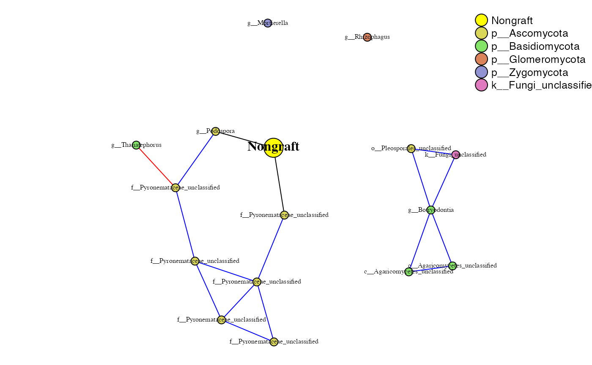
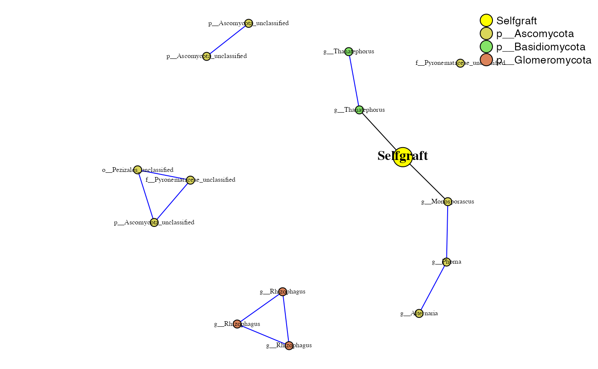
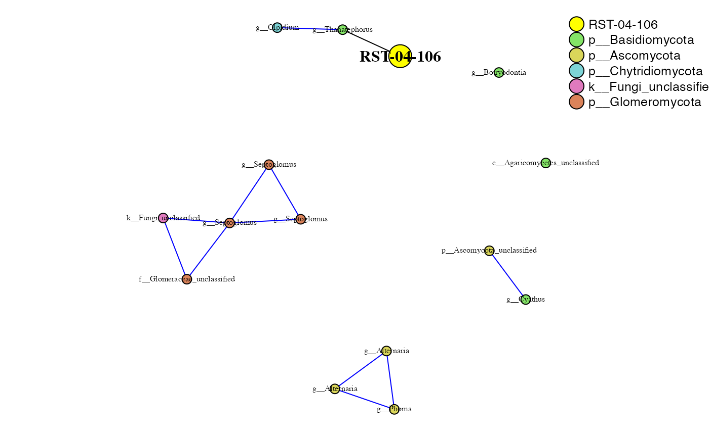
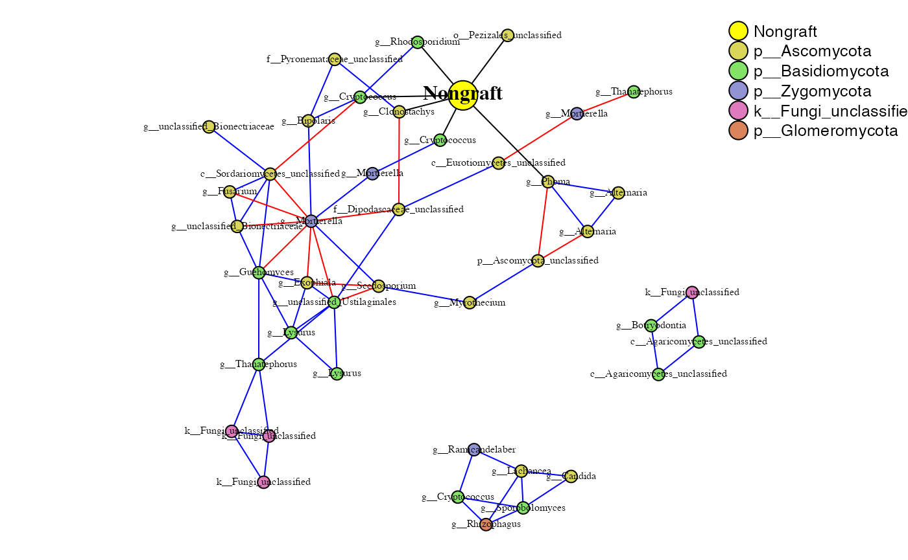
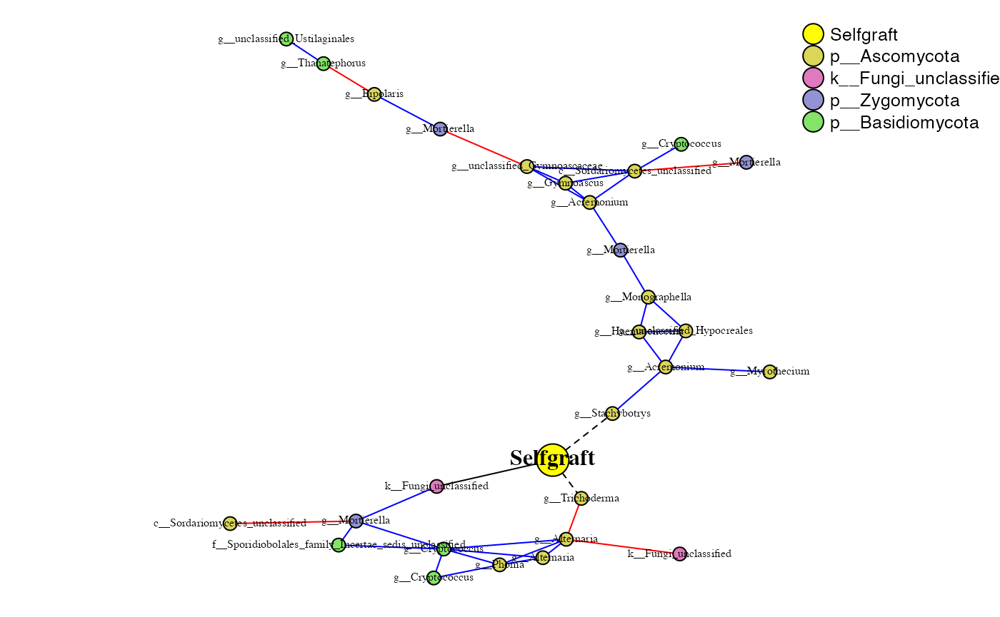
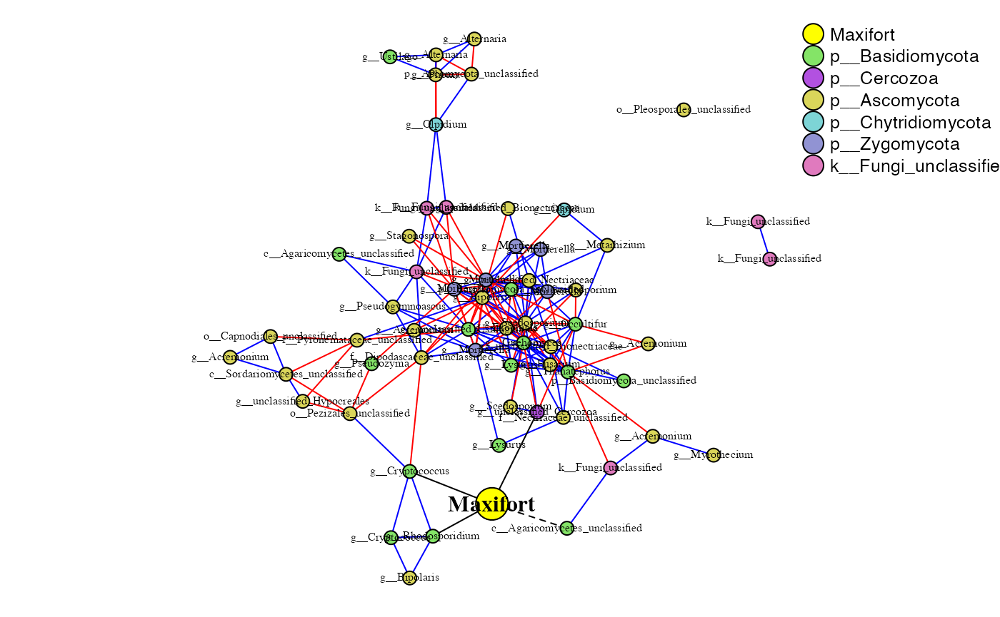
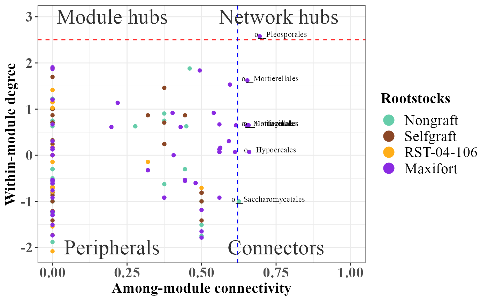

PhONA-manuscript
Ravin Poudel
9/6/2020
PhONA-manuscript.Rmd# GLOBAL VARIABLE ITERS=5
###### Load the data otu_data_fungi <- read.mothur.shared("data/Fungi1415_trim.contigs.trim.unique.precluster.pick.pick.subsample.nn.unique_list.shared") rownames(otu_data_fungi) <- paste0("F", rownames(otu_data_fungi)) # upload meta data file bigmetadata <- read.csv("data/block_diversity_selected_tunnel_ww.csv", header = T, row.names = 1, stringsAsFactors = FALSE) rownames(bigmetadata) <- paste0("F", rownames(bigmetadata)) ### select otu_data based on metadata otu_data <- otu_data_fungi[rownames(bigmetadata), ] dim(otu_data)
## [1] 160 16151## [1] 160 16151# now select metadata based on od meta_data <- bigmetadata[rownames(otu_data), , drop = FALSE] all.equal(row.names(meta_data), row.names(otu_data))
## [1] TRUE# upload taxanomy file tax_fungi <- read.mothur.taxonomy("data/Fungi1415_trim.contigs.trim.unique.precluster.pick.pick.subsample.nn.unique_list.0.03.cons.taxonomy") # checking if taxonomy file and count files have same otus all.equal(colnames(otu_data), row.names(tax_fungi))
## [1] TRUE# ########## read in phenome data/ Yield data # read in data pheno_data <- read.csv("data/tomato_yield.csv", header = TRUE, stringsAsFactors = FALSE, row.names = 1) rownames(pheno_data) <- paste0("F", rownames(pheno_data)) hist(pheno_data$Marketable)

pheno_data_mean <- aggregate(pheno_data$Marketable, by=list(Rootstock=pheno_data$Rootstock), FUN=mean) pheno_data_sel <- pheno_data %>% select(Rootstock, Compartment, Marketable, Study_site, Year, Sample_name) meta_withpheo = inner_join(meta_data, pheno_data_sel)
## Joining, by = c("Rootstock", "Compartment", "Study_site", "Year", "Sample_name")rownames(meta_withpheo)<- rownames(meta_data) # create a phyloseq object~ can combine count, metadata, taxonomy, and phylogentic tree. tax.mat <- tax_table(as.matrix(tax_fungi)) otu.mat = otu_table(t(otu_data), taxa_are_rows = TRUE) sample.mat <- sample_data(meta_withpheo) physeq = phyloseq(otu.mat, tax.mat, sample.mat) ## Assign color to the taxa on the whole phyloseq object so that the same color is assigned for a taxon across treatments physeq = taxacolor(phyobj = physeq, coloredby = "Phylum") physeq
## phyloseq-class experiment-level object
## otu_table() OTU Table: [ 16151 taxa and 160 samples ]
## sample_data() Sample Data: [ 160 samples by 10 sample variables ]
## tax_table() Taxonomy Table: [ 16151 taxa by 9 taxonomic ranks ]At this point we have a phyloseq object for all the treatments. Now, we will process the phyloseq object the split it by treatment combinations.
#### All the combinations of treatment factor region <- unique(as.character(data.frame(sample_data(physeq))$Compartment)) region
## [1] "Rhizosphere" "Endosphere"treatment <- unique(as.character(data.frame(sample_data(physeq))$Rootstock)) treatment
## [1] "Selfgraft" "RST-04-106" "Nongraft" "Maxifort"Getting phyloseq object for endosphere
# Endosphere ng_endo <- subset_samples(physeq, c(Compartment =="Endosphere" & Rootstock=="Nongraft")) %>% prune_taxa(taxa_sums(.) > 2, .) # Inputfile for running SparCC ng_endo_sparcc = otu_table(ng_endo) write.table(data.frame(OTU_id = rownames(ng_endo_sparcc), ng_endo_sparcc), file = "data/sparcc_data/ng_endo_sparcc.txt", sep = "\t", row.names = FALSE, quote = FALSE) sg_endo <- subset_samples(physeq, c(Compartment =="Endosphere" & Rootstock=="Selfgraft")) %>% prune_taxa(taxa_sums(.) > 2, .) # Inputfile for running SparCC sg_endo_sparcc = otu_table(sg_endo) write.table(data.frame(OTU_id = rownames(sg_endo_sparcc), sg_endo_sparcc), file = "data/sparcc_data/sg_endo_sparcc.txt", sep = "\t", row.names = FALSE, quote = FALSE) rst_endo <- subset_samples(physeq, c(Compartment =="Endosphere" & Rootstock=="RST-04-106")) %>% prune_taxa(taxa_sums(.) > 2, .) # Inputfile for running SparCC rst_endo_sparcc = otu_table(rst_endo) write.table(data.frame(OTU_id = rownames(rst_endo_sparcc), rst_endo_sparcc), file = "data/sparcc_data/rst_endo_sparcc.txt", sep = "\t", row.names = FALSE, quote = FALSE) maxi_endo <- subset_samples(physeq, c(Compartment =="Endosphere" & Rootstock=="Maxifort")) %>% prune_taxa(taxa_sums(.) > 2, .) # Inputfile for running SparCC maxi_endo_sparcc = otu_table(maxi_endo) write.table(data.frame(OTU_id = rownames(maxi_endo_sparcc), maxi_endo_sparcc), file = "data/sparcc_data/maxi_endo_sparcc.txt", sep = "\t", row.names = FALSE, quote = FALSE)
Getting phyloseq object for rhizosphere
# Rhizosphere ng_rhizo <- subset_samples(physeq, c(Compartment =="Rhizosphere" & Rootstock=="Nongraft")) %>% prune_taxa(taxa_sums(.) > 2, .) # Inputfile for running SparCC ng_rhizo_sparcc = otu_table(ng_rhizo) write.table(data.frame(OTU_id = rownames(ng_rhizo_sparcc), ng_rhizo_sparcc), file = "data/sparcc_data/ng_rhizo_sparcc.txt", sep = "\t", row.names = FALSE, quote = FALSE) sg_rhizo <- subset_samples(physeq, c(Compartment =="Rhizosphere" & Rootstock=="Selfgraft")) %>% prune_taxa(taxa_sums(.) > 2, .) # Inputfile for running SparCC sg_rhizo_sparcc = otu_table(sg_rhizo) write.table(data.frame(OTU_id = rownames(sg_rhizo_sparcc), sg_rhizo_sparcc), file = "data/sparcc_data/sg_rhizo_sparcc.txt", sep = "\t", row.names = FALSE, quote = FALSE) rst_rhizo <- subset_samples(physeq, c(Compartment =="Rhizosphere" & Rootstock=="RST-04-106"))%>% prune_taxa(taxa_sums(.) > 2, .) # Inputfile for running SparCC rst_rhizo_sparcc = otu_table(rst_rhizo) write.table(data.frame(OTU_id = rownames(rst_rhizo_sparcc), rst_rhizo_sparcc), file = "data/sparcc_data/rst_rhizo_sparcc.txt", sep = "\t", row.names = FALSE, quote = FALSE) maxi_rhizo <- subset_samples(physeq, c(Compartment =="Rhizosphere" & Rootstock=="Maxifort")) %>% prune_taxa(taxa_sums(.) > 2, .) # Inputfile for running SparCC maxi_rhizo_sparcc = otu_table(maxi_rhizo) write.table(data.frame(OTU_id = rownames(maxi_rhizo_sparcc), maxi_rhizo_sparcc), file = "data/sparcc_data/maxi_rhizo_sparcc.txt", sep = "\t", row.names = FALSE, quote = FALSE)
Read in output from sparcc, then run SparCC.
Nongraft and Endosphere
ng_endo_sparcc.cor <- read.delim("data/sparcc_output/Endosphere_Nongraft_cor_sparcc.out", sep = "\t", header = T, row.names = 1) ng_endo_sparcc.pval <- read.delim("data/sparcc_output/Endosphere_Nongraft_pvals.two_sided.txt", sep = "\t", header = T, row.names = 1) phona_ng_endo <- PhONA(physeqobj = ng_endo, cordata = ng_endo_sparcc.cor, pdata = ng_endo_sparcc.pval, model = "lasso", iters = ITERS, defineTreatment = "Nongraft",nodesize = 5, PhenoNodesize = 12, definePhenotype = "Marketable", PhenoNodelabel = "Nongraft")
## Total number of iterations used: 5
Selfgraft and Endosphere
sg_endo_sparcc.cor <- read.delim("data/sparcc_output/Endosphere_Selfgraft_cor_sparcc.out", sep = "\t", header = T, row.names = 1) sg_endo_sparcc.pval <- read.delim("data/sparcc_output/Endosphere_Selfgraft_pvals.two_sided.txt", sep = "\t", header = T, row.names = 1) phona_sg_endo <-PhONA(physeqobj = sg_endo, cordata = sg_endo_sparcc.cor, pdata = sg_endo_sparcc.pval, model = "lasso", iters = ITERS, defineTreatment = "Selfgraft",nodesize = 5, PhenoNodesize = 12, definePhenotype = "Marketable", PhenoNodelabel = "Selfgraft")
## Total number of iterations used: 5
RST-04-106 and Endosphere
rst_endo_sparcc.cor <- read.delim("data/sparcc_output/Endosphere_RST-04-106_cor_sparcc.out", sep = "\t", header = T, row.names = 1) rst_endo_sparcc.pval <- read.delim("data/sparcc_output/Endosphere_RST-04-106_pvals.two_sided.txt", sep = "\t", header = T, row.names = 1) phona_rst_endo <-PhONA(physeqobj = rst_endo, cordata = rst_endo_sparcc.cor, pdata = rst_endo_sparcc.pval, model = "lasso", iters = ITERS, defineTreatment = "RST-04-106",nodesize = 5, PhenoNodesize = 12, definePhenotype = "Marketable", PhenoNodelabel = "RST-04-106")
## Total number of iterations used: 5
Maxifort and Endosphere
maxi_endo_sparcc.cor <- read.delim("data/sparcc_output/Endosphere_Maxifort_cor_sparcc.out", sep = "\t", header = T, row.names = 1) maxi_endo_sparcc.pval <- read.delim("data/sparcc_output/Endosphere_Maxifort_pvals.two_sided.txt", sep = "\t", header = T, row.names = 1) phona_maxi_endo <-PhONA(physeqobj = maxi_endo, cordata = maxi_endo_sparcc.cor, pdata = maxi_endo_sparcc.pval, model = "lasso", iters = ITERS, defineTreatment = "Maxifort",nodesize = 5, PhenoNodesize = 12, definePhenotype = "Marketable", PhenoNodelabel = "Maxifort")
## Total number of iterations used: 5Nongraft and Rhizosphere
ng_rhizo_sparcc.cor <- read.delim("data/sparcc_output/Rhizosphere_Nongraft_cor_sparcc.out", sep = "\t", header = T, row.names = 1) ng_rhizo_sparcc.pval <- read.delim("data/sparcc_output/Rhizosphere_Nongraft_pvals.two_sided.txt", sep = "\t", header = T, row.names = 1) phona_ng_rhizo <- PhONA(physeqobj = ng_rhizo, cordata = ng_rhizo_sparcc.cor, pdata = ng_rhizo_sparcc.pval, model = "lasso", iters = ITERS, defineTreatment = "Nongraft",nodesize = 5, PhenoNodesize = 12, definePhenotype = "Marketable", PhenoNodelabel = "Nongraft")
## Total number of iterations used: 5
Selfgraft and Rhizosphere
sg_rhizo_sparcc.cor <- read.delim("data/sparcc_output/Rhizosphere_Selfgraft_cor_sparcc.out", sep = "\t", header = T, row.names = 1) sg_rhizo_sparcc.pval <- read.delim("data/sparcc_output/Rhizosphere_Selfgraft_pvals.two_sided.txt", sep = "\t", header = T, row.names = 1) phona_sg_rhizo <- PhONA(physeqobj = sg_rhizo, cordata = sg_rhizo_sparcc.cor, pdata = sg_rhizo_sparcc.pval, model = "lasso", iters = ITERS, defineTreatment = "Selfgraft",nodesize = 5, PhenoNodesize = 12, definePhenotype = "Marketable", PhenoNodelabel = "Selfgraft")
## Total number of iterations used: 5
RST-04-106 and Rhizosphere
rst_rhizo_sparcc.cor <- read.delim("data/sparcc_output/Rhizosphere_RST-04-106_cor_sparcc.out", sep = "\t", header = T, row.names = 1) rst_rhizo_sparcc.pval <- read.delim("data/sparcc_output/Rhizosphere_RST-04-106_pvals.two_sided.txt", sep = "\t", header = T, row.names = 1) phona_rst_rhizo <- PhONA(physeqobj = rst_rhizo, cordata = rst_rhizo_sparcc.cor, pdata = rst_rhizo_sparcc.pval, model = "lasso", iters = ITERS, defineTreatment = "RST-04-106",nodesize = 5, PhenoNodesize = 12, definePhenotype = "Marketable", PhenoNodelabel = "RST-04-106")
## Total number of iterations used: 5
Maxifort and Rhizosphere
maxi_rhizo_sparcc.cor <- read.delim("data/sparcc_output/Rhizosphere_Maxifort_cor_sparcc.out", sep = "\t", header = T, row.names = 1) maxi_rhizo_sparcc.pval <- read.delim("data/sparcc_output/Rhizosphere_Maxifort_pvals.two_sided.txt", sep = "\t", header = T, row.names = 1) phona_maxi_rhizo <- PhONA(physeqobj = maxi_rhizo, cordata = maxi_rhizo_sparcc.cor, pdata = maxi_rhizo_sparcc.pval, model = "lasso", defineTreatment = "Maxifort",nodesize = 5, iters = ITERS, PhenoNodesize = 12, definePhenotype = "Marketable", PhenoNodelabel = "Maxifort")
## Total number of iterations used: 5
Role analyses using SA algorithm as implemented in rnetcarto package.
Endosphere
# Endosphere role_df_Endosphere <- rbind(phona_ng_endo$roles, phona_sg_endo$roles, phona_rst_endo$roles, phona_maxi_endo$roles)
fig3b_endo <-ggplot(role_df_Endosphere, aes(participation,connectivity,label=name)) + geom_point(aes(colour = factor(Treatment)))+ scale_size(guide = 'none')+ scale_color_manual(breaks= c("Nongraft", "Selfgraft", "RST-04-106", "Maxifort"),values = c("mediumaquamarine","sienna4","#ffae19","blueviolet"))+ geom_text(aes(label=ifelse(role!="Peripheral",as.character(Order),'')),hjust=0.1,vjust=0.1,size=3,color="black",family="Times New Roman")+ geom_hline(yintercept=2.5, linetype="dashed", color = "red")+ geom_vline(xintercept = 0.62, linetype="dashed",color = "blue")+ annotate("text", x = 0.2, y = 3, label = "Module hubs",color="gray20",size=8,family="Times New Roman")+ annotate("text", x = 0.75, y = 3, label = " Network hubs",color="gray20",size=8,family="Times New Roman")+ annotate("text", x = 0.2, y = -2, label = "Peripherals",color="gray20",size=8,family="Times New Roman")+ annotate("text", x = 0.75, y = -2, label = "Connectors",color="gray20",size=8,family="Times New Roman")+ labs(x = "Among-module connectivity", y = "Within-module degree", col="Rootstocks") + theme_bw() + scale_x_continuous(limits = c(0, 1.0))+ theme(axis.text=element_text(size=16,face="bold",family="Times New Roman"),axis.title=element_text(size=16,face="bold",family="Times New Roman"))+ labs(fill = "Dose (mg)") + theme(legend.title=element_text(size=16,face="bold",family="Times New Roman"), legend.text=element_text(size=16,family="Times New Roman")) + guides(color = guide_legend(override.aes = list(size=5))) fig3b_endo

Rhizosphere
# Endosphere role_df_Rhizosphere <- rbind(phona_ng_rhizo$roles, phona_sg_rhizo$roles, phona_rst_rhizo$roles, phona_maxi_rhizo$roles)
fig3b_rhizo <-ggplot(role_df_Rhizosphere, aes(participation,connectivity,label=name)) + geom_point(aes(colour = factor(Treatment)))+ scale_size(guide = 'none')+ scale_color_manual(breaks= c("Nongraft", "Selfgraft", "RST-04-106", "Maxifort"),values = c("mediumaquamarine","sienna4","#ffae19","blueviolet"))+ geom_text(aes(label=ifelse(role!="Peripheral",as.character(Order),'')),hjust=0.1,vjust=0.1,size=3,color="black",family="Times New Roman")+ geom_hline(yintercept=2.5, linetype="dashed", color = "red")+ geom_vline(xintercept = 0.62, linetype="dashed",color = "blue")+ annotate("text", x = 0.2, y = 3, label = "Module hubs",color="gray20",size=8,family="Times New Roman")+ annotate("text", x = 0.75, y = 3, label = " Network hubs",color="gray20",size=8,family="Times New Roman")+ annotate("text", x = 0.2, y = -2, label = "Peripherals",color="gray20",size=8,family="Times New Roman")+ annotate("text", x = 0.75, y = -2, label = "Connectors",color="gray20",size=8,family="Times New Roman")+ labs(x = "Among-module connectivity", y = "Within-module degree", col="Rootstocks") + theme_bw() + scale_x_continuous(limits = c(0, 1.0))+ theme(axis.text=element_text(size=16,face="bold",family="Times New Roman"),axis.title=element_text(size=16,face="bold",family="Times New Roman"))+ labs(fill = "Dose (mg)") + theme(legend.title=element_text(size=16,face="bold",family="Times New Roman"), legend.text=element_text(size=16,family="Times New Roman")) + guides(color = guide_legend(override.aes = list(size=5))) fig3b_rhizo

Summary of all the graphs:
Endosphere
summary_graph_endo_df <- rbind(phona_ng_endo$graph_summary, phona_sg_endo$graph_summary, phona_rst_endo$graph_summary, phona_maxi_endo$graph_summary) kable(summary_graph_endo_df)
| node | edge | nodeDegree | avgpath | trans | mod | connectance | wtc | nModules.SA | top3hub | top3hubv | n_postiveL | n_negativeL | Treatment |
|---|---|---|---|---|---|---|---|---|---|---|---|---|---|
| 77 | 120 | 1.558 | 5.774 | 0.559 | 0.751 | 0.020 | 13 | 9 | 54;5;64 | 1;0.978;0.915 | 111 | 5 | Nongraft |
| 81 | 111 | 1.370 | 6.380 | 0.417 | 0.754 | 0.017 | 15 | 11 | 23;41;14 | 1;0.963;0.72 | 97 | 9 | Selfgraft |
| 70 | 107 | 1.529 | 4.225 | 0.558 | 0.763 | 0.022 | 13 | 11 | 19;48;54 | 1;0.904;0.904 | 95 | 9 | RST-04-106 |
| 92 | 184 | 2.000 | 3.716 | 0.596 | 0.615 | 0.022 | 14 | 10 | 36;2;11 | 1;0.925;0.885 | 148 | 32 | Maxifort |
Rhizosphere
summary_graph_rhizo_df <- rbind(phona_ng_rhizo$graph_summary, phona_sg_rhizo$graph_summary, phona_rst_rhizo$graph_summary, phona_maxi_rhizo$graph_summary) kable(summary_graph_rhizo_df)
| node | edge | nodeDegree | avgpath | trans | mod | connectance | wtc | nModules.SA | top3hub | top3hubv | n_postiveL | n_negativeL | Treatment |
|---|---|---|---|---|---|---|---|---|---|---|---|---|---|
| 132 | 336 | 2.545 | 4.078 | 0.508 | 0.597 | 0.019 | 15 | 12 | 17;39;36 | 1;0.866;0.761 | 257 | 72 | Nongraft |
| 112 | 268 | 2.393 | 3.892 | 0.471 | 0.591 | 0.021 | 16 | 8 | 20;10;11 | 1;0.961;0.767 | 200 | 62 | Selfgraft |
| 133 | 336 | 2.526 | 4.215 | 0.497 | 0.645 | 0.019 | 17 | 12 | 39;67;27 | 1;0.978;0.811 | 280 | 54 | RST-04-106 |
| 172 | 736 | 4.279 | 3.078 | 0.594 | 0.379 | 0.025 | 21 | 11 | 22;39;73 | 1;0.954;0.914 | 451 | 278 | Maxifort |